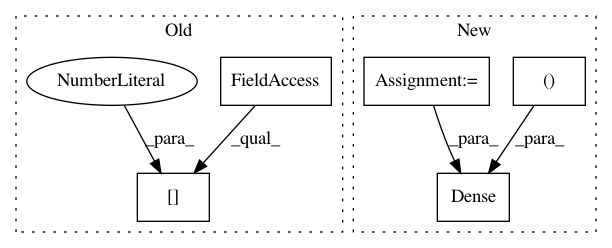

6cb84f4b742861e823015cac18535efa468b0d81,autokeras/layer_transformer.py,,dense_to_wider_layer,#Any#Any#Any#,45
Before Change
def dense_to_wider_layer(pre_layer, next_layer, n_add_units):
n_units1 = pre_layer.get_weights().shape[0]
n_units2 = pre_layer.get_weights().shape[1]
n_units3 = next_layer.get_weights().shape[1]
teacher_w1 = pre_layer.get_weights()[0]
teacher_b1 = pre_layer.get_weights()[1]
After Change
def dense_to_wider_layer(pre_layer, next_layer, n_add_units):
n_units1 = pre_layer.get_weights()[0].shape[0]
n_units2 = pre_layer.units
n_units3 = next_layer.units
teacher_w1 = pre_layer.get_weights()[0]
teacher_b1 = pre_layer.get_weights()[1]
teacher_w2 = next_layer.get_weights()[0]
teacher_b2 = next_layer.get_weights()[1]
rand = np.random.randint(n_units2, size=n_add_units)
replication_factor = np.bincount(rand)
student_w1 = teacher_w1.copy()
student_w2 = teacher_w2.copy()
student_b1 = teacher_b1.copy()
// target layer update (i)
for i in range(n_add_units):
teacher_index = rand[i]
new_weight = teacher_w1[:, teacher_index]
new_weight = new_weight[:, np.newaxis]
student_w1 = np.concatenate((student_w1, new_weight), axis=1)
student_b1 = np.append(student_b1, teacher_b1[teacher_index])
// next layer update (i+1)
for i in range(n_add_units):
teacher_index = rand[i]
n_copies = replication_factor[teacher_index] + 1
new_weight = teacher_w2[teacher_index, :]*(1./n_copies)
new_weight = new_weight[np.newaxis, :]
student_w2 = np.concatenate((student_w2, new_weight), axis=0)
student_w2[teacher_index, :] = new_weight
new_pre_layer = Dense(n_units2 + n_add_units, input_shape=(n_units1,), activation="relu")
new_pre_layer.build((None, n_units1))
new_pre_layer.set_weights((student_w1, student_b1))
new_next_layer = Dense(n_units3, activation="relu")
new_next_layer.build((None, n_units2 + n_add_units))
In pattern: SUPERPATTERN
Frequency: 3
Non-data size: 5
Instances
Project Name: jhfjhfj1/autokeras
Commit Name: 6cb84f4b742861e823015cac18535efa468b0d81
Time: 2017-12-15
Author: jhfjhfj1@gmail.com
File Name: autokeras/layer_transformer.py
Class Name:
Method Name: dense_to_wider_layer
Project Name: AIRLab-POLIMI/mushroom
Commit Name: 79ea4c6923dd064badd5da15cae012a7a7632268
Time: 2017-03-16
Author: carlo.deramo@gmail.com
File Name: PyPi/approximators/nn.py
Class Name: DenseNN
Method Name: _init